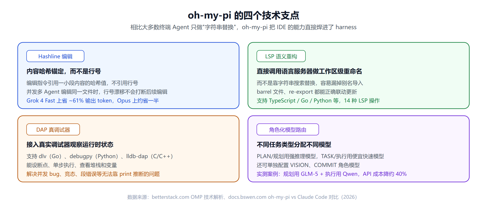
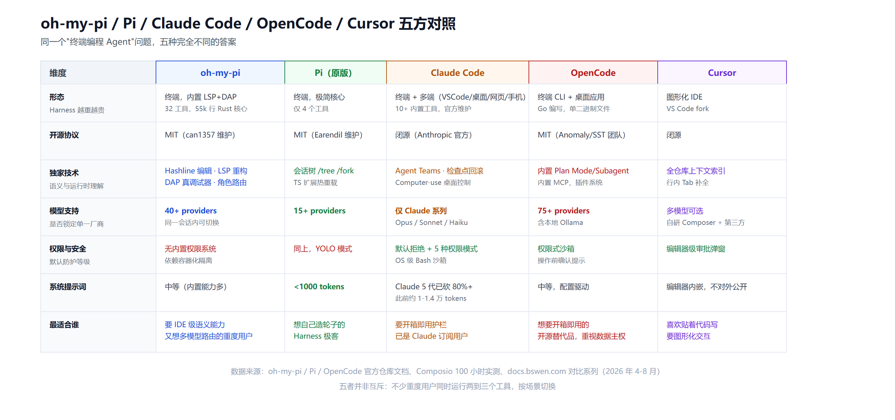

oh-my-pi 深度调研：从「反 Claude Code」到把 IDE 塞进终端的疯狂 Fork
一个"叫不出名字"的项目，怎么长成了这样
Mario Zechner——libGDX的作者——2025年底做了一个决定：不再用Claude Code了。他曾经是Claude Code的重度用户，重度到专门写过一个叫cchistory的工具去追踪它系统提示词的每次变化，甚至反编译了二进制文件去给它加官方没做的功能。但他最后受不了的，不是Claude Code不好用，而是它总在变——系统提示词和工具定义每次更新都在变，模型行为跟着漂移，他搭的工作流一次次被破坏。
于是他自己写了一个agent。四个工具（read、write、edit、bash），一个只有几百token的系统提示词，没有MCP，没有权限审批。他给它取名"Pi"，理由很直接：这样没人能Google到它。
这个项目现在被maintained under Earendil（Mario在2026年4月加入该公司，他自己写博客调侃"我卖身了"，核心代码仍保持MIT协议）。而故事的另一条线，是一个叫can1357（Can Boluk）的开发者，把Pi fork了出去，取名oh-my-pi——却干了一件几乎跟Mario哲学完全相反的事：往这个极简核心里塞进了LSP语言服务器集成、DAP真调试器、哈希锚定编辑格式、角色化模型路由……活生生把它变成了"终端里的一整个IDE"。
这篇文章想把oh-my-pi这个项目本身讲清楚：它从哪来、技术上到底做了什么、和原版Pi的哲学分歧在哪，以及放到Claude Code、Cursor、OpenCode这些主流编程Agent里，它处在什么位置。
oh-my-pi是什么
oh-my-pi（命令行别名omp，也有分支叫ompk）是GitHub用户can1357维护的开源终端AI编程Agent，仓库地址是github.com/can1357/oh-my-pi，官网ohmypi.xyz。它的定位很直接：一个专为终端打造的AI编程Agent——具备哈希锚定编辑、经过优化的工具harness、LSP语言服务器集成、Python运行环境、浏览器操作能力、子agent协同，以及更多。
一些基础数据：
| 维度 | 数据 |
|---|---|
| GitHub Stars | 24.4k |
| 许可证 | MIT |
| 语言构成 | TypeScript 81.2%、Rust 10.0%、Python 7.7%、JavaScript 0.6% |
| 核心代码量 | 约5.5万行Rust |
| 内置工具数 | 32个 |
| LSP操作 | 14种 |
| DAP操作 | 28种 |
| 模型Provider支持 | 40+ |
值得一提的是，oh-my-pi的生态本身也在快速裂变——GitHub上能找到多个平行fork，比如oh-my-pk、saki-oh-my-pi、oh-my-pi-agent、oh-omp等，说明这条"极简核心+重度扩展"的路子吸引了相当多开发者跟进，但也意味着生态比较碎片化，选型时得认准是哪个仓库、哪个维护者。
四个技术支点
多数终端编程Agent对文件的"编辑"能力，本质上还是字符串搜索替换加行号定位。oh-my-pi选择了一条更硬核的路：直接把IDE和调试器的核心能力搬进agent的工具集。

Hashline Edits：不靠行号，靠内容哈希
标准的AI文件编辑方式是把完整原文件和完整修改后版本一起发给模型，或者靠行号定位要改的地方。这两种方式在大文件上都费token，而且一旦多个编辑操作接连发生，行号会漂移——Agent A改了第50行,后面所有行号都往下挪,Agent B原本瞄准"第60行"的编辑这时候就打在了错误的位置上。
oh-my-pi的Hashline Edits用内容哈希做锚点：一小段从具体行内容派生出的短哈希标识符，编辑操作引用这个哈希，而不是行号或整段原文。好处是两个：一是省token（在Grok 4 Fast上输出token能减少约61%，在Claude Opus上大约省一半）；二是对行号漂移天然免疫——即便文件在编辑过程中发生了位移，只要目标内容还在，哈希锚点依然能找到它。有实测提到，在Claude Code里跑并行子agent编辑同一文件时会因为行号漂移而编辑失败，换到oh-my-pi后并发编辑变得可靠。
LSP集成：语义级重构，不是字符串替换
当你让一个Agent"重命名一个模块"，多数终端Agent的做法是搜索这个字符串然后替换——这会漏掉别名导入、漏掉barrel文件（统一导出文件）里的re-export，还可能因为替换不彻底产生语法错误。
oh-my-pi直接对接项目的语言服务器（TypeScript、Go、Python等），发出工作区级别的重构指令。语言服务器理解代码的语义结构，所以重命名操作能正确传播到所有引用、barrel文件和re-export上，落盘之前就是结构正确的，而不是"字符串匹配出来大概率正确"。
DAP：真调试器，不是print大法
多数Agent调试bug的方式是插入print()或console.log()重新运行——这对并发问题、竞态条件、段错误这类需要观察程序实时运行状态才能定位的问题基本无效。
oh-my-pi支持Debug Adapter Protocol（DAP），能把真实调试器attach到运行中的进程上。支持的调试器包括Go的dlv、Python的debugpy、C/C++的lldb-dap。接入之后，它能设断点、单步执行、查看调用栈、检查实时变量状态——靠观察而不是靠推断源代码来定位运行时bug。
角色化模型路由：不同活儿分给不同模型
oh-my-pi连接Anthropic、OpenAI、Grok等多家provider，而且不是"选一个模型跑所有任务"，是给不同任务类型分配不同的模型配置：
- PLAN/ARCHITECT角色：分配高推理能力模型，负责架构规划
- TASK/SUBTASK角色：分配更快更便宜的模型，负责日常实现
- VISION角色：分配有视觉能力的模型，负责图片分析
- COMMIT角色：专门为生成commit信息调优的模型
这样贵的模型调用只花在真正值得的任务上，日常琐碎工作走性价比更高的选项。有实测提到，把规划任务切到GLM-5、执行任务切到Qwen之后，API成本下降了约40%。另外，如果你已经登录了Claude Code账号，oh-my-pi还能自动导入其设置和插件。
其他值得一提的能力：review命令能分析PR、给出合并结论并按严重程度排优先级，还能批量扫多个分支或并行审查未提交的改动；子agent可以把复杂任务拆到并行的隔离环境里跑，完成后合并结果；把GitHub的issue、PR、diff当成本地文件一样读取；"Hindsight Memory"会把每次会话压缩成项目的持久心智模型，让跨会话的长期上下文延续下去。
vs. Pi（它的亲爹）：一场哲学倒转
理解oh-my-pi绕不开先理解Pi本身在拒绝什么。Mario Zechner的论点很直白：前沿模型已经被强化学习训练到对"什么是编程agent的标准行为"有极深理解，不需要一万多token的系统提示词去反复提醒。需要ripgrep？让模型自己调rg。需要GitHub？调gh。需要浏览器？让Pi给自己写个浏览器工具。
Pi因此故意不做的事情：没有MCP、没有内置子agent（推荐用tmux开新的Pi实例）、没有plan mode（推荐写plan markdown文件）、没有后台bash执行（tmux提供）、没有内置待办列表。会话以树结构存储而不是线性对话记录，/tree能跳回任意历史节点，/fork能从任意历史消息分叉出新会话。
Pi的极简没有牺牲能力——在TerminalBench基准上，用Claude Opus 4.5跑分，Pi排名第二，仅次于Terminus，而且是在没有MCP支持、没有子agent、没有plan mode、没有后台bash、没有内置待办的情况下拿到的成绩，当时甚至还没实现上下文压缩逻辑。
oh-my-pi则是相反方向的答案：既然模型不需要传统意义上"喂指令的系统提示词"，那把节省下来的空间用来接入真正能提升agent能力的基础设施（LSP、DAP）不是更好？两边的分歧本质是同一个问题的两种回答——"agent到底需要多少harness"，Pi说越少越好，oh-my-pi说该重的地方要重。
vs. Claude Code：电池全家桶 vs 自己拼装
Claude Code是Anthropic官方的编程agent，走的是完全相反的产品哲学——10+内置工具、Sub Agents、Agent Teams、Plan Mode、MCP（客户端+服务端）、Agent Skills、插件、Hooks、检查点回滚、5种权限模式外加OS级沙箱，覆盖终端、VS Code、JetBrains、桌面应用、浏览器和手机端。系统提示词曾经达到1万到1.4万token，2026年针对Claude 5代模型砍掉了80%以上——这个"删harness"的动作本身，某种程度上是对Pi那套极简论点最有力的验证。
两者的核心差异点：
模型选择：Claude Code只跑Claude系列（Opus/Sonnet/Haiku），垂直整合程度高，模型本身就是在这套harness里训练出来的行为习惯；oh-my-pi/Pi系是model-agnostic，能接40+ providers，同一会话内可以中途切换模型。
订阅与计费：Claude Code走订阅制（Pro每月20美元起，Max档100-200美元），账单可预测；oh-my-pi/Pi免费开源，按API调用量付费。这里有个关键限制——Anthropic在2026年1月到4月逐步切断了第三方harness使用Claude订阅OAuth的能力，OpenCode、Cline、Pi系工具全部被断开，现在只能用API Key的价格跑Claude模型（比订阅贵不少）。OpenAI Codex团队则走了反方向，公开鼓励第三方harness接入。
权限模型：Claude Code默认拒绝高风险操作，需要用户审批，还有OS级sandbox；oh-my-pi/Pi默认没有权限系统，第一条prompt就是完整用户权限，安全边界靠容器化隔离（Docker、microVM）实现。Mario本人的论点是"权限审批大多是安全剧场，代码能被执行的那一刻游戏已经结束了"。
有一份第三方实测（Composio，用同一个模型DeepSeek V4 Flash分别接入不同harness跑30道agentic任务）给出的数字是：Pi通过率20/30、单次成功成本0.028美元；Claude Code通过率16/30、单次成功成本0.195美元。需要注意这个测试跑的是Pi本体而非oh-my-pi，且用的是非Claude模型（等于给Claude Code卸了它专门优化的那个引擎），所以不能直接当成"oh-my-pi比Claude Code强"的证据，只能说明"轻harness+便宜模型"这条路径在特定基准下有成本优势。多篇文章的共识结论是：功能表格上Pi系工具赢在便宜、灵活、透明，但日常打开率上，即便是Pi的粉丝也大多把Claude Code当主力，Pi/oh-my-pi留给需要多provider、需要本地模型、需要深度定制的场景。
vs. Cursor：终端派 vs IDE派
Cursor是VS Code的fork，图形化编辑器，强项是行内Tab补全、实时编辑反馈、全仓库索引式的上下文理解——本质是"贴着代码写"的心流工具，2026年ARR突破10亿美元，是开发者工具史上增长最快的产品之一。它和oh-my-pi代表的是完全不同的交互范式：Cursor让你留在编辑器里被AI辅助，oh-my-pi/Claude Code让你把整个任务丢给终端里的agent自主执行完再看结果。
oh-my-pi的宣传语直接把话说穿了——"把整个IDE塞进终端"。它想证明：只要接入了LSP和DAP这两个IDE最核心的能力，终端agent在代码理解深度上完全能够对标图形化IDE，不需要牺牲终端agent的自主性和可编排性。这是"终端派 vs GUI派"路线之争里，终端阵营目前打得最激进的一张牌。
vs. OpenCode：两种"开源牌"打法不同
OpenCode是另一个MIT开源的编程Agent，Go编写，单二进制文件，走的是"开箱即用的开源替代品"路线——plan mode、subagent、MCP都是内置的，权限式沙箱，10+ providers，配置驱动。它跟Claude Code更像是同一类产品的开源版，跟Pi/oh-my-pi的"可编程平台"定位不完全重合。有一份aimultiple的编程基准测试里，OpenCode综合分排第一（0.816），高于Claude Code（0.789）和Cursor（0.751）——但要注意这类基准结果和跑分方法、任务集选择强相关，横向比较时最好看具体任务类型是否匹配你的场景。
五方对照表

值得注意的风险
选oh-my-pi或者Pi系工具之前，有两点值得提前知道：
扩展的信任边界模糊。oh-my-pi/Pi的插件/扩展模型是TypeScript代码，直接运行在agent进程里，拥有和agent本体一样的系统权限——一旦某个社区扩展被攻破，攻破的就是agent自己，没有沙箱可以逃逸。社区里已经有对这个生态提出批评的声音（thevinter的"Bad Vibes From Pi"一文），核心担忧是不少社区扩展本身也是"vibe coding"出来的产物，质量参差不齐。官方的建议是把扩展当依赖项一样审查，并且把整个agent运行环境容器化。
Anthropic订阅锁定带来的成本不确定性。如果你的工作流重度依赖Claude模型，用oh-my-pi/Pi系工具就意味着放弃订阅制的可预测账单，转向按token计费——这在重度使用场景下账单可能明显更贵，也可能因为角色化路由和更省token的编辑格式而更便宜，具体取决于你的任务类型和模型选择策略。
该不该选oh-my-pi
结合前面的对比，几种典型场景：
- 想要IDE级的语义理解和真调试器，又不想被锁定在单一模型厂商：oh-my-pi是目前这个交集里技术上最激进的选项。
- 想要极简、透明、完全自己拼装harness的实验田：选原版Pi，享受更干净的核心和会话树的设计。
- 想要开箱即用、有官方支持和护栏、已经是Claude订阅用户：Claude Code仍然是更稳妥的日常主力。
- 更习惯留在图形化编辑器里、要行内实时补全：Cursor这类IDE派工具解决的是不同的问题，不是oh-my-pi的直接对手。
值得强调的是，这几类工具并不互斥。多篇实测文章都提到同一个模式：把Claude Code当日常主力，把Pi系工具留给需要多provider切换、本地模型、或者深度自定义工作流的场景，两边并行使用，按任务类型切换。
小结
oh-my-pi这个项目最有意思的地方，不是它做了什么功能，而是它在"agent到底需要多少外围工程"这个2026年最核心的争论里，选择了一个和自己出身完全相反的答案。它的母项目Pi用一场"删繁就简"的实验证明了轻量harness也能跑出高分，而oh-my-pi则用LSP、DAP、Hashline编辑证明了往harness里加真正硬核的基础设施（而不是啰嗦的提示词）同样能换来实打实的能力提升。两条路径都在往前走，谁也没能一劳永逸地证明自己是唯一正解——这大概正是当下终端编程Agent领域最真实的状态：industry仍处在"messing around and finding out"的阶段，没有定论,只有不断被验证或推翻的架构假设。
本文数据截至2026年8月13日。开源项目的功能、性能和生态都在快速变化，建议以GitHub仓库最新README和官方文档为准。
参考来源
- can1357/oh-my-pi GitHub仓库. https://github.com/can1357/oh-my-pi
- oh-my-pi官网. https://ohmypi.xyz/
- OMP (Oh My Pi): AI Coding Agent with LSP, DAP Debugger, and Hashline Edits, betterstack.com. https://betterstack.com/community/guides/ai/oh-my-pi-ai-coding-agent/
- Building Pi: A Minimal, Extensible Coding Agent Framework, zenml.io LLMOps Database. https://www.zenml.io/llmops-database/building-pi-a-minimal-extensible-coding-agent-framework
- Pi Agent vs Claude Code After 100 Hours of Real Use, Composio (dev.to). https://dev.to/composiodev/pi-agent-vs-claude-code-after-100-hours-of-real-use-1dfp
- oh-my-pi vs Claude Code: Which AI Coding Harness Should You Use?, docs.bswen.com. https://docs.bswen.com/blog/2026-04-20-oh-my-pi-vs-claude-code/
- Pi vs Claude Code vs Codex vs OpenCode: Which Coding Agent Should You Use in 2026?, docs.bswen.com. https://docs.bswen.com/blog/2026-08-10-pi-vs-claude-code-vs-codex-vs-opencode
- Claude Code vs Cursor benchmark comparison, aimultiple.com. https://www.research.aimultiple.com/ai-coding-benchmark/
相关阅读
- 2026年最全闭源AI编程工具横评：Claude Code vs Cursor vs Copilot vs Codex vs Windsurf
- OpenCode实战指南：免费AI编程Agent + 免费大模型，零成本搞定代码开发
- Harness 工程：当模型趋同，决定 AI Agent 成败的「看不见的一半」
- Vibe Coding的隐藏代价：那些没人告诉你的安全风险
推荐搭配装备
善其事，利其器。以下硬件能最大化你的AI体验👇
🔗 通过以上链接购买可支持本站持续运营 🙏